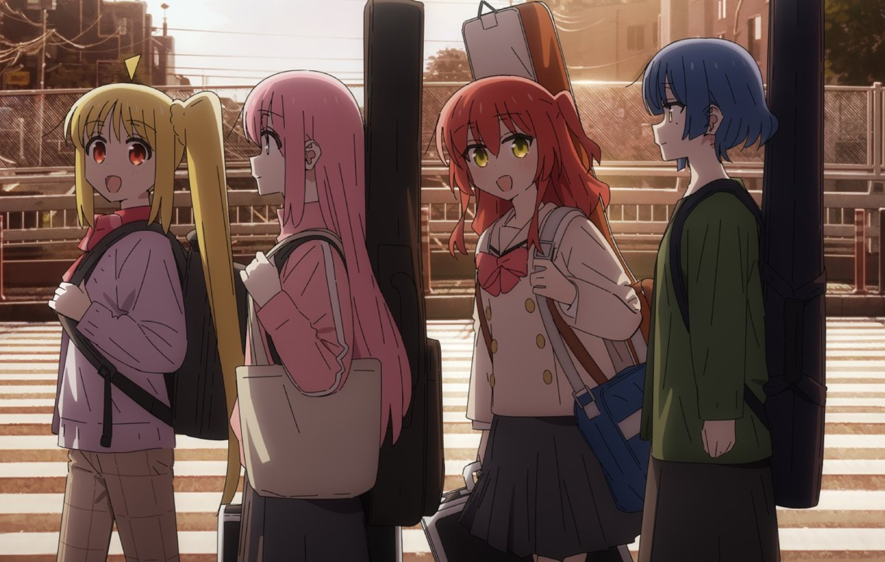
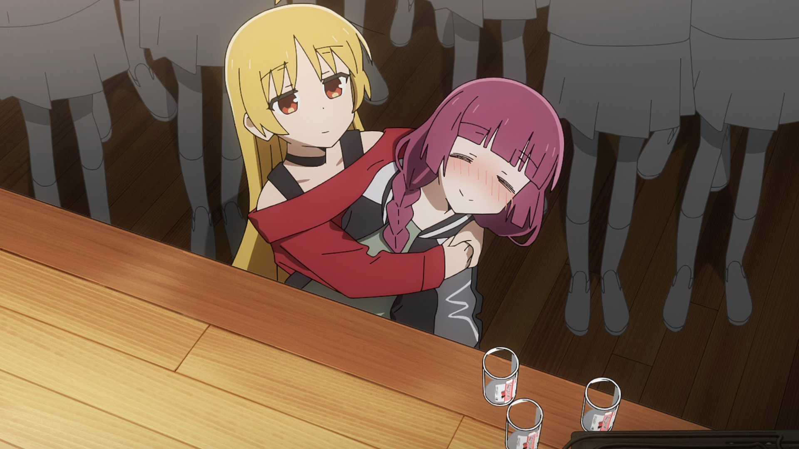
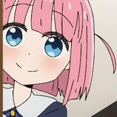
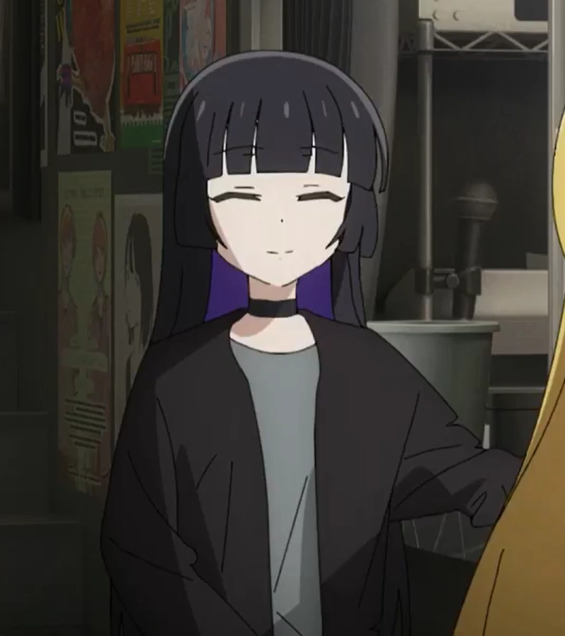
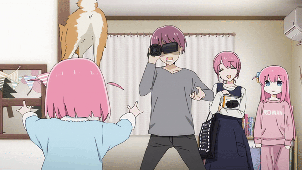

The popular show with an anxious protagonist attempting to overcome
the hurdles of constant panic and even just speaking because of other
people resonated with a lot of people.
Today I simply wish to delve into the entire cast and classify them,
giving them a score based on what I think about them.
| Name | Description | Image | |
|---|---|---|---|
| S |
Gotou Hitori Yamada Ryou Ijichi Nijika Kita Ikuyo |
These characters by themselves don't really shine whatsoever, you wouldn't pay too much attention to someone bringing a guitar to school or an extrovert or someone who's just alone, circumstances bring us close to each other until we learn about the people we are around. These 4 individuals are simply a good match, a great friendgroup a lot of us strive to have. |  |
| A |
Ijichi Seika Hiroi Kikuri |
These 2 are critical characters that help bocchi overcome some of her anxiety, giving her a little push along the way to become more social, kind and a better guitarist all around, plus they have a comedic and great personality whilst retaining an interesting backstory so they don't feel like one dimensional characters. |  |
| B |
Gotou Futari PA-san |
Just some comedic relief characters, there's nothing that makes them particularly memorable when compared to the rest of the cast, still they have received some attention in the form of a little backstory and personality to them. |   |
| C |
Gotou Naoki Gotou Michiyo |
 |
|